Como mi amiga la Susi no se anda con chiquitas , cuando le pregunté qué le haría ilusión como regalo de Reyes me dijo : Algo caro y que me dé mucho gusto.
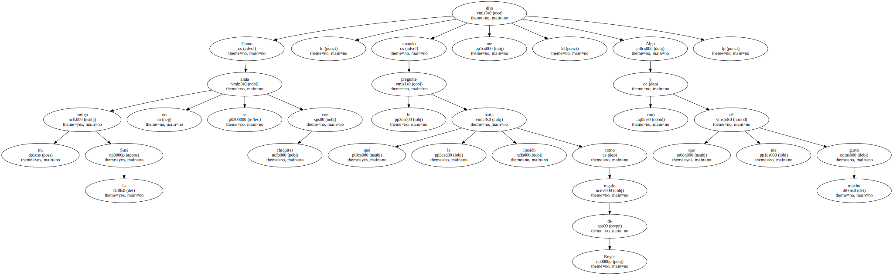Y habrá que reconocer que , si nos dejamos de hipocresías , ésas son las dos cualidades de un buen regalo : que cueste un dineral y que te ponga mucha alegría en el cuerpo.
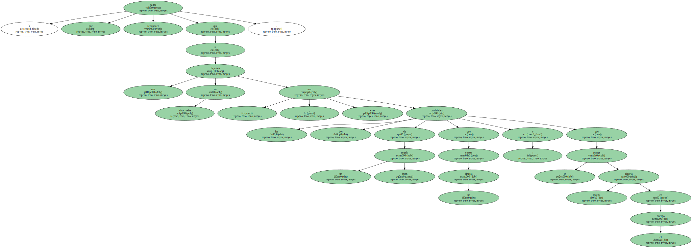Luego vienen a meter cizaña el sentido común , la debilidad sentimental , la resignación , los escrúpulos y el miedo a las enfermedades y acaba uno conformándose con cualquier cosa.
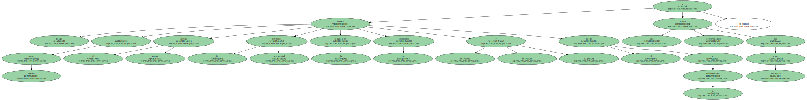Con un detalle , vamos.
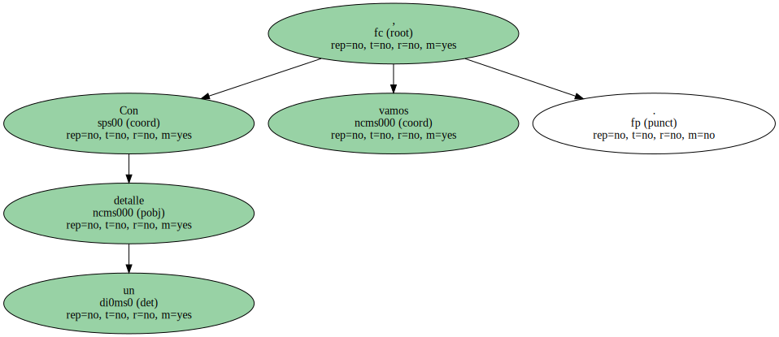Regalar - detalles - es una cursilería o un bochorno.
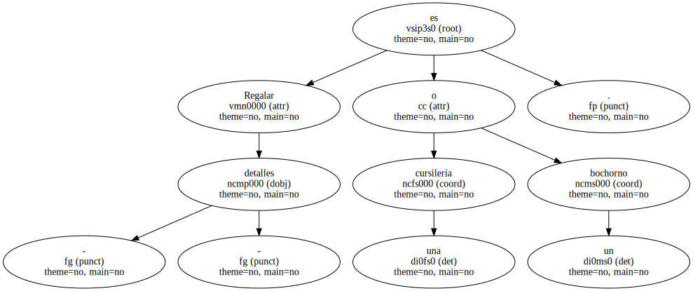A cualquiera que no sea un místico o un mezquino le apetecería hacer regalos despampanantes y quedar como un marajá ; si no sólo no es un místico ni un mezquino , sino que tampoco es un estrecho , entonces procuraría que el regalo , además de carísimo , tuviera directamente que ver con el mayor vicio del obsequiado.

Por ejemplo : - Tú qué le regalarías por Reyes al duque de Feria ? , le pregunto a la Susi.

Y la Susi me dice : Una guardería a todo plan , naturalmente de niñas.
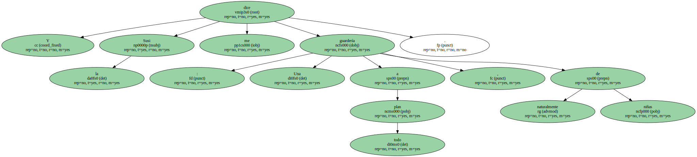- Y a Michael Jackson.
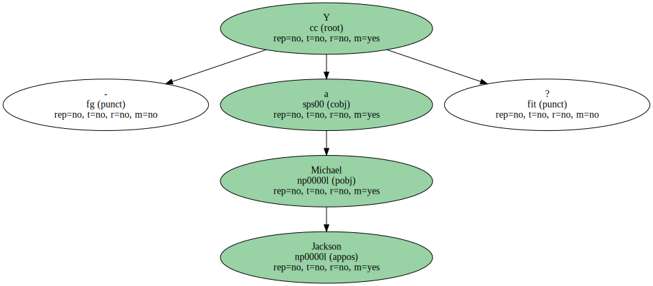Pues otra guardería a todo plan , naturalmente de niños.
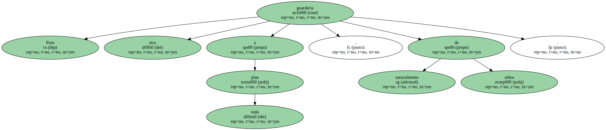La entrometida decencia impediría hacer esos regalos , pero entonces mejor no regalar nada , porque un regalo tiene que ser un regalo : costoso y sabroso.
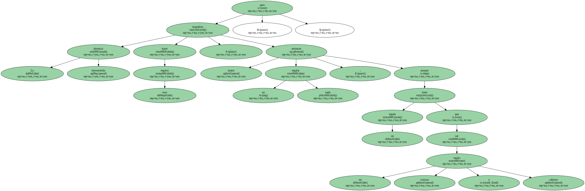Todo lo demás es catequesis.
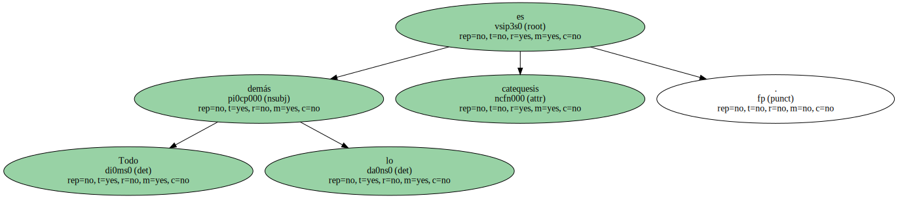Si se prescinde de la decencia , el problema está en que el presupuesto del común de los mortales no admite grandes despilfarros , y entonces viene la mar de bien ponerse mariagoretis y regalarle a Rafael Feria un alfiler de corbata y a Michael Jackson un pai-pai.
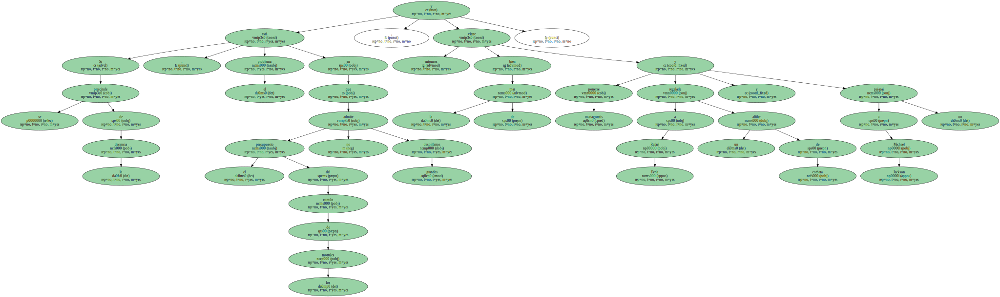Llegados a ese extremo , el regalo va impepinablemente acompañado de una pizpireta letanía de - no es nada , por Dios - , - no tiene importancia - , - no es más que un detalle -.
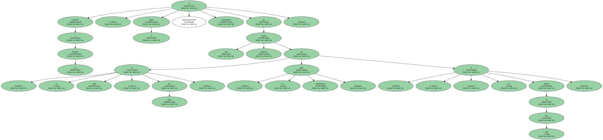Uno acaba de detalles hasta el gorro.
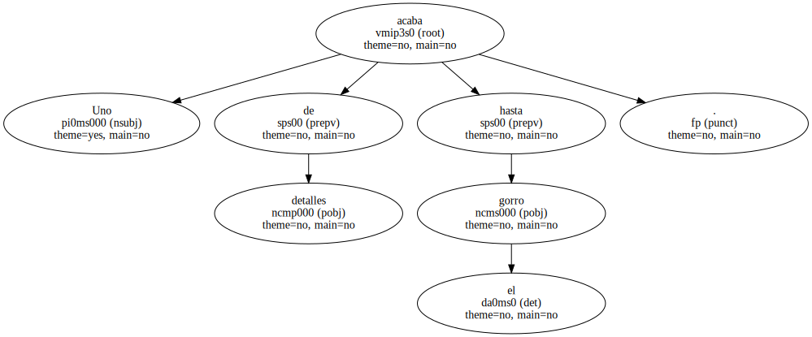